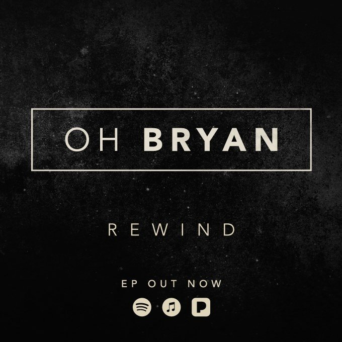

Buy the debut EP now
REWIND


BUY NOW
Buy the debut EP now
REWIND
Oh Bryan are an alternative rock band based in Dublin City.
The band consists of
Stephen O Brien, Shane Power and Billy Campbell. Formed in late 2016 Oh Bryan
has progressed significantly in just one year.
The band recently released their debut EP “Rewind” back in August to a sold out show in Whelan’s.
Since the release of their debut EP Oh Bryan have received a positive response
from national radio station Today FM.
Their second single “maze” was given its first spin on the 'Lost In Music' show
hosted by Louise Duffy.
Since then Oh Bryan have shared large stages with other great Irish artists
such as Little Hours, The Blizzards and Chasing Abbey.
Moving into 2018 the band are already in pre-production for new music.
These new songs will be debuted at their headline shows in March.
For more information contact ohbryanmusic@gmail.com